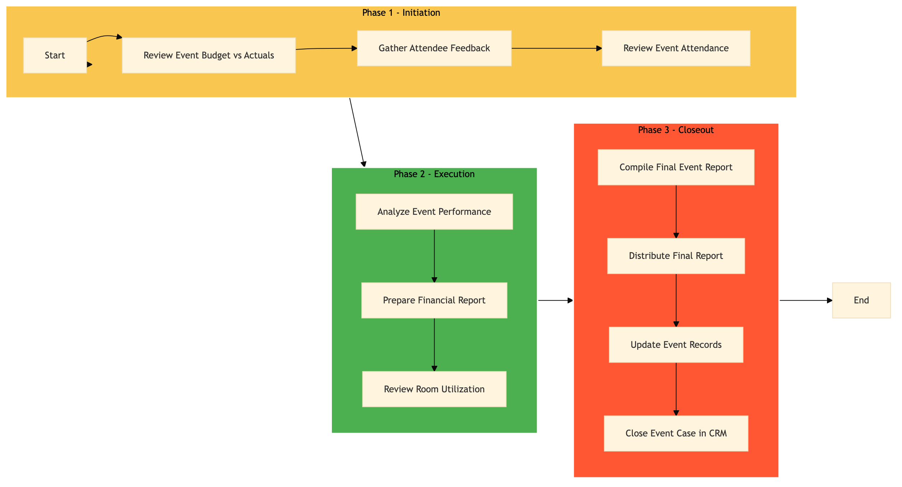

| Role | Steps |
|---|---|
| Revenue Manager | 1.1 2.1 3.3 |
| Event Coordinator | 1.2 2.3 3.1 3.2 3.4 |
| Front Desk Agent | 1.3 |
| Accountant | 2.2 |
| Executive Housekeeper | 2.3 |
| Step | Name | Role | System | Input | Output | KPI | Dec? | Exc? | Pain Point / Risk |
|---|---|---|---|---|---|---|---|---|---|
| 1.1 | Review Event Budget vs Actuals | Revenue Manager | Oracle OPERA Cloud | Event budget and actual expenses | Budget variance report | Less than 30 minutes | Y | N | Accurate real-time financial tracking during events |
| 1.2 | Gather Attendee Feedback | Event Coordinator | Marriott Bonvoy CRM | Survey forms and feedback emails | Attendee satisfaction report | Less than 45 minutes | N | Y | Low response rates to surveys |
| 1.3 | Review Event Attendance | Front Desk Agent | Oracle OPERA Cloud | Event check-in data | Attendance report | Less than 20 minutes | N | Y | Manual entry errors in attendance records |
| 2.1 | Analyze Event Performance | Revenue Manager | Oracle OPERA Cloud | Event data and reports | Performance analysis report | Less than 60 minutes | Y | N | Complexity in analyzing large event datasets |
| 2.2 | Prepare Financial Report | Accountant | SAP S/4HANA | Event financial data | Financial report | Less than 90 minutes | N | Y | Integration issues between SAP and Oracle OPERA Cloud |
| 2.3 | Review Room Utilization | Executive Housekeeper | Oracle OPERA Cloud | Room reservation data | Room utilization report | Less than 45 minutes | N | Y | Incomplete room reservation records |
| 3.1 | Compile Final Event Report | Event Coordinator | Microsoft Power BI | All event-related reports and data | Final event report | Less than 2 hours | Y | N | Data visualization challenges in Microsoft Power BI |
| 3.2 | Distribute Final Report | Event Coordinator | Email System | Final event report | Report distributed to stakeholders | Less than 15 minutes | N | Y | Email delivery failures |
| 3.3 | Update Event Records | Revenue Manager | Oracle OPERA Cloud | Final event report | Updated event records in Oracle OPERA Cloud | Less than 1 hour | N | Y | Data entry errors during record updates |
| 3.4 | Close Event Case in CRM | Event Coordinator | Marriott Bonvoy CRM | Final event report and feedback | Closed event case in CRM | Less than 30 minutes | N | Y | CRM system downtime affecting data entry |
This process outlines the steps involved in post-event breakdown and reporting at a Marriott full-service hotel. It ensures that all event-related activities are properly concluded and documented.